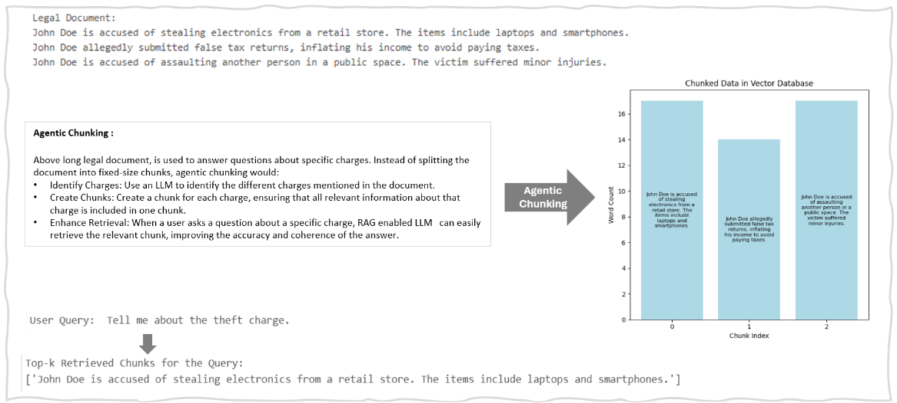
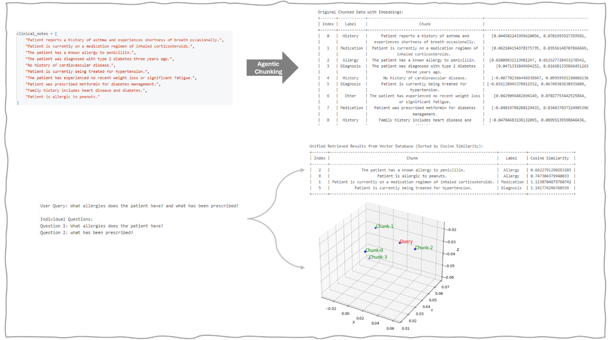

Use Cases
Contract Review and Analysis (Legal Industry )
Agentic chunking can enhance legal document analysis by breaking contracts, agreements, and court rulings into smaller, context-aware chunks like clauses, terms, and obligations. This method helps to identify key elements such as exceptions or conditions and present them in an organized manner. It can also automatically flag areas requiring human review, like vague clauses or conflicting terms, and generate summaries for clients or legal professionals.
Medical Record Analysis (Healthcare Industry)
Agentic chunking can help analyse patient medical records by breaking down extensive, data into actionable chunks, such as symptoms, diagnoses, treatments, and patient history. Important details can be extracted from a patient’s medical history and organized by context, which can help identify trends or highlight critical health information quickly. And can also help with.
Risk Analysis and Financial Report Summarization (Finance Industry)
Agentic chunking can be employed to analyse financial report by segmenting documents into contextually relevant chunks (e.g., revenue growth, debt obligations, market forecasts), agentic chunking can improve the efficiency of risk assessments or compliance checks.
Agentic Chunking Code-1
Example of Hybrid Chunking Result-1



Agentic Chunking Code-2
Example of Hybrid Chunking Result-2

Pros and Cons of Agentic Chunking
| Pros | Cons |
|---|---|
| Modular processing : Allows for more flexible and adaptable responses. If certain chunks need more detailed analysis or interpretation, they can be processed separately without affecting the entire input.. | Increased Complexity in Output Integration : Recombining processed chunks into a unified output requires careful handling to ensure that the response is seamless and coherent. Without proper integration, the response might appear disjointed or lack logical flow. |
| Context Preservation : By breaking down the input into chunks, the model can preserve local context within each chunk, potentially improving the coherence of individual parts of the response. | Loss of Global Context : While chunks are processed independently, the model might lose the overall, larger context if the relationships between chunks aren't effectively maintained or recombined. |
| Improved Manageability and Efficiency : Allows the model to focus on more manageable pieces of information, which can help prevent overwhelming the model with too much data at once. | Higher Computational Cost : While chunking can lead to some efficiencies, it might require additional resources to track, process, and integrate the chunks, especially when the input is highly fragmented or when the recombination process is complex. |